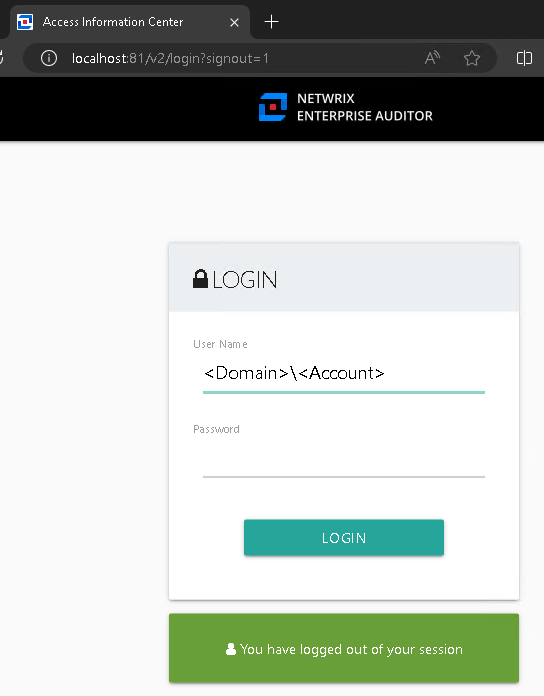

Symptom
You receive the following error when Domain Prefix is required for log-in:
Cause
Due to the change from IIS to a new web server, subdomain users will now need to include their domain prefix before their username when logging in.

NOTE: You can create a more uniform and consistent log-in experience across all domains connected to the AIC by leaving it as is and requiring the domain prefix.
Resolution
Ensure that the Default Domain is based on the AIC Use the following Active Directory account setting, which must be the desired domain.
NOTE: All domains enabled to access the AIC must also have data collected by the Enterprise Auditor Active Directory Inventory solution as per the following article: Active Directory—Multiple Domains.